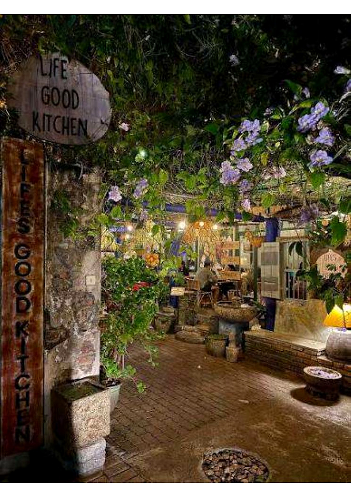

What reviewers often appreciate
Online review summaries frequently praise the relaxed, greenery-filled setting, friendly service and a broad menu with popular comfort-food options.
Summary of public review listings · not a direct customer quoteGOOD FOOD · GREEN SPACES · GOOD FEELINGS
A cosy garden hideaway in Colombo, serving wholesome favourites, fresh drinks and feel-good food.

A little oasis in ColomboWELCOME TO LIFE'S GOOD
Set along Sulaiman Terrace off Jawatta Road, Life's Good Kitchen brings together a leafy atmosphere and a menu spanning comforting meals, fresh drinks and plant-forward options.
Come by for brunch, lunch or dinner, settle into the garden-inspired space, and find something delicious to make your day feel a little better.
A LOOK AROUND
Photos supplied in your PDF have been included in this gallery.
KIND WORDS & COMMUNITY
Public review listings show strong overall feedback for the food and leafy atmosphere. Rather than inventing customer quotations, use the links to read the latest original reviews.
Read Google reviews ↗Online review summaries frequently praise the relaxed, greenery-filled setting, friendly service and a broad menu with popular comfort-food options.
Summary of public review listings · not a direct customer quoteSome public feedback mentions occasional insects around the outdoor dining area, which can be part of a garden setting.
Based on public review summariesCOME FIND US
A leafy dining stop on Sulaiman Terrace, near Jawatta Road, Colombo 05.
LIFE'S GOOD KITCHEN
No. 12, Sulaiman Terrace,
Jawatta Road, Colombo 05,
Sri Lanka
Mon–Fri: 11:00 AM – 9:30 PM
Sat–Sun: 9:00 AM – 9:30 PM